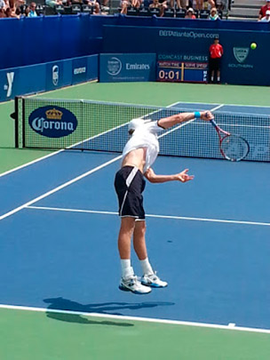

Atlanta Tennis
Random observations from a 12+ year Atlanta area tennis player/writer, and a lifelong enthusiast/evangelist of the greatest sport that (almost) anyone can play and enjoy. With ALTA, USTA, Ultimate Tennis and more, Atlanta is the (2nd?) Best Tennis Town in the United States of America!
Home
- My Atlanta Tennis Resume
- Meeting Tracy Austin
- Atlanta Tennis Championships 2010
- Atlanta Tennis Championships 2011
- BBT Atlanta Open 2012
Tuesday, July 30, 2013
BBT Atlanta Open 2013 - pictures and videos from both finals
Sunday was a beautiful day to conclude this year's BBT Atlanta Open at Atlantic Station, though not quite as cool as Saturday, a nice (if occasional) breeze could be felt during the latter stages of what turned out to be the longest 3-set match of the year. There were no breaks of serve and John Isner prevailed over Kevin Anderson 6-7 (3), 7-6 (2), 7-6 (2). Here are some pictures and videos (of the end of each set) from the singles and doubles finals on Sunday, July 28:


Source: The orginal atlanta tennis blog site.